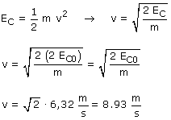

b) El cuerpo tenía 100 J de energía cinética. Al hacer sobre él un trabajo de 100 J su energía cinética pasará a ser: 200 J (100 + 100). La nueva velocidad será:  Observa que para duplicar la energía cinética la velocidad debe hacerse 1.4 veces mayor solamente |